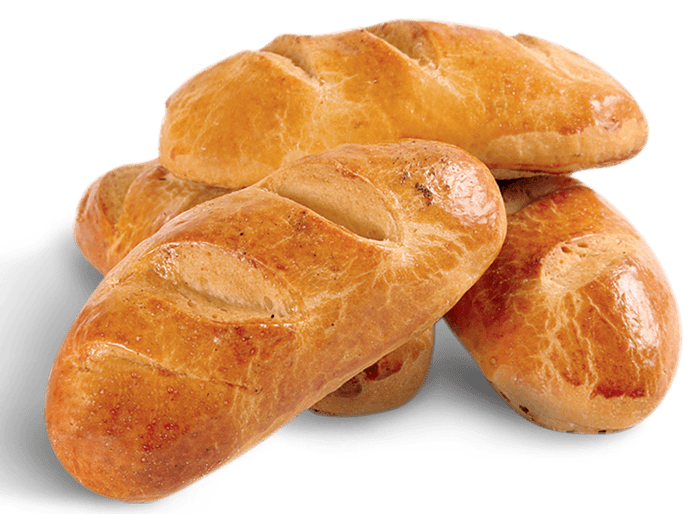

PANADERÍA
PANADERÍA MIGAS AMIGAS 
PANADERÍA Sumérgete en el Mundo Dulce de Nuestra Pastelería Artesanal
En Nuestra Pastelería Artesanal, te damos la bienvenida a un paraíso de dulzura y creatividad, donde la pasión por la repostería se combina con la precisión artesanal. Nuestros pasteleros maestros han perfeccionado el arte de crear delicias tentadoras que no solo satisfacen el paladar, sino que también cautivan la vista.
Ingredientes de la Mayor Calidad
La excelencia comienza con los ingredientes. En Nuestra Pastelería, seleccionamos con esmero ingredientes de la más alta calidad para elaborar nuestros pasteles. Utilizamos mantequilla de alta calidad, huevos frescos, chocolate belga y frutas de estación para garantizar un sabor inigualable. Nuestros pasteles son libres de conservantes y aromatizantes artificiales, para que disfrutes de un auténtico placer culinario.
Sistema de Elaboración
Cada pastel es una obra de arte comestible y se elabora con el máximo cuidado. Nuestros pasteleros expertos siguen un proceso minucioso que incluye la preparación de la masa o el bizcocho desde cero, la creación de rellenos exquisitos y la decoración artística. En Nuestra Pastelería, el detalle es fundamental: desde la textura perfecta de los bizcochos hasta la elegante decoración de cada pastel, garantizamos que nuestros productos sean una delicia para todos los sentidos.


 Panadería
Panadería